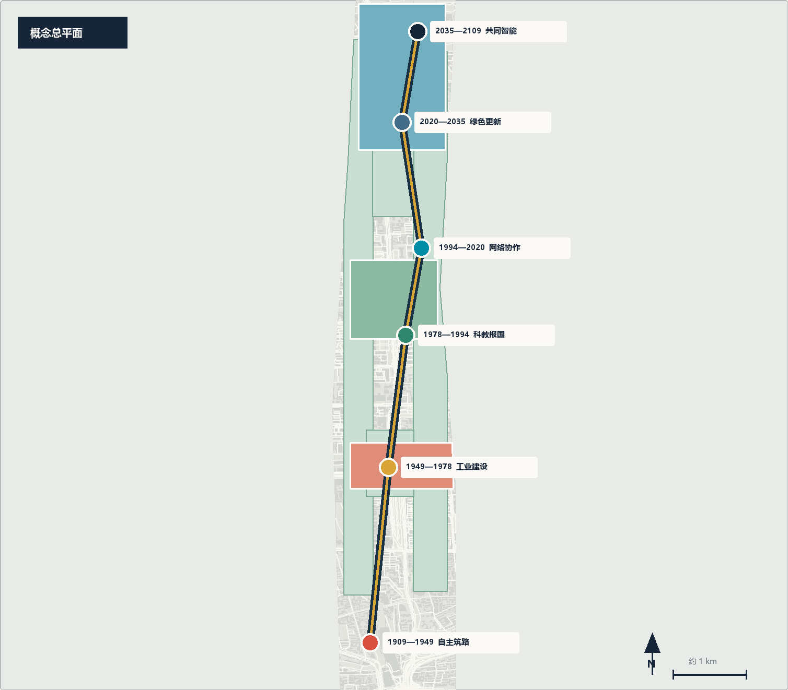
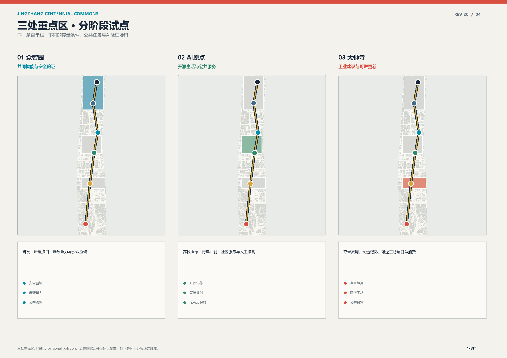
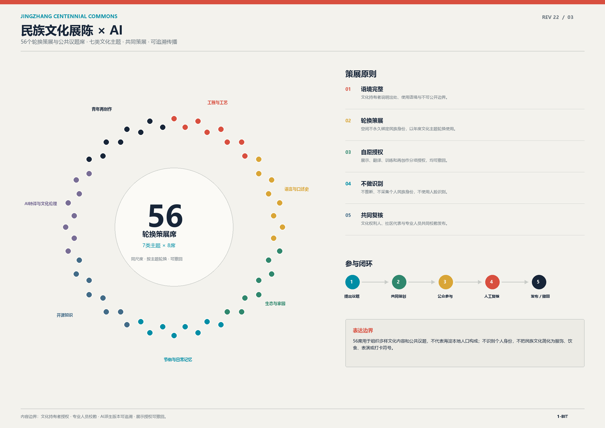
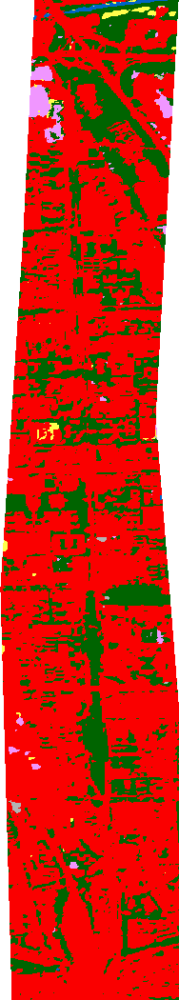
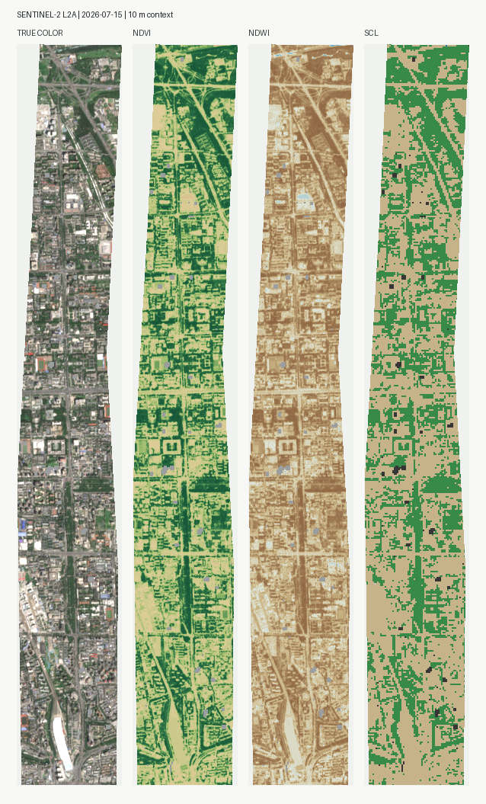
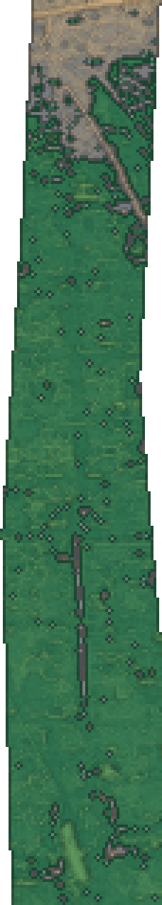

共同基线
交通、政务、医疗、教育、养老、就业与文化服务先有无算法也可运行的公共基线。
以京张铁路的自主建设精神为主轴，把 AI 研发、产业服务、社区生活、绿色空间、公共治理与可追溯的民族文化展陈织成一条可进入、可理解、可复核的城市公共基础设施。
方案把“普通服务基线 + AI可选增强 + 采用/修改/停止”的公开同题验证方法扩展到文化展陈、公共服务和城市运营：AI 不替代基本服务，不推断民族身份，不把文化做成标签；只有在授权、可解释、人工负责和线下旁路完整时，AI 才进入城市生活。
交通、政务、医疗、教育、养老、就业与文化服务先有无算法也可运行的公共基线。
AI 负责翻译、预测、匹配、辅助决策与自助办理；用户可拒绝，不因拒绝降低服务。
56 个轮换席围绕文化内容共同策展，不永久绑定民族、空间、服饰、饮食或表演符号。
停机后删除临时副本、保留人工记录与普通路径，空间恢复为通用公共设施。
用地来自包内 `land_use.geojson` 的概念分区。每类用地同时配置就业、公共服务、开放空间和人工兜底，避免研发、产业、居住与生态彼此割裂；面积只用于概念结构比较，待官方 polygon 与控规条件到位后全量复算。

点击重点区查看定位、用地、空间原型、AI 场景和实施风险。三处 polygon 均为 provisional，详细设计是可替换、可复算的概念原型，不作为法定地块边界。

AI 研发创新用地提供模型、算力与安全验证，AI 服务线下产业把成果转成法律、知识产权、投融资、中试、展示、采购和运维服务，社区与绿地则承担真实但可控的公共场景验证。
“民族文化展陈 × AI”是面向展馆、公共文化空间和多语传播的内容系统。文化持有者决定展陈语境和授权范围；AI 辅助转写、字幕、知识关联、无障碍讲解和教育版本生成；专业人员负责校勘与发布。系统不识别或推断个人民族身份。

每个策展席都可提名口述史、工艺、语言和建设记忆，参与 AI 转译校勘、撤回授权和年度换展；席位按主题轮换，不形成永久民族展位。
每一项 AI 增强都必须让使用者看见来源、选择是否参与、要求人工复核、纠正错误和撤回授权。56席是轮换策展与公共议题席，不代表法定民族机构，也不采集或推断个人民族身份。
展馆不是把民族文化变成符号集合，而是把“谁讲述、为何保存、AI如何转译、公众如何参与、内容如何撤回”变成一条完整参观路线。四个展厅围绕铁路建设记忆、语言声音、工艺知识和当代共创组织，展项均与文明种子库共享同一套授权和版本账本。

“一库三站”把授权、原真采录、AI 转译、人工校勘、版本固化和迁移再生接成一个公共文化基础设施。点击七个阶段查看责任、保存对象和失败处置；这里不把上链等同于永久，也不让模型认定文化归属。
25 张场景卡覆盖产业、交通、政务、社区、健康教育、文化生态。点击任一场景，证据工作台同步显示普通基线、AI 增强、最小数据、责任人、停止条件、退出方式与待测指标；URL 可保存当前重点区、场景和查看模式。
选择场景查看完整服务合同
?scenario=G01&station=origin&mode=compare
节点数量为概念配置，用于检查功能覆盖，不代表审定设施数量或工程点位。
选择典型场景，对比永久基线、AI 可选增强和停机还场。任何 AI 效率、满意度或节能数字都必须等待现场基线与试验数据，本页不虚构承诺值。
六类人群在一天中的需求不同，但共享同一套“数字自助 + 人工窗口 + 线下空间 + 无障碍通道”。系统不以手机、账号或算法评分作为享受基本服务的前提。
| 人群 | 早晨 | 工作/学习 | 午后办事 | 傍晚生活 | 夜间安全 |
|---|---|---|---|---|---|
| 科研人员 | 多式联运建议轨道、步行、自行车，普通导向并行 | 算力与实验预约项目权限最小化，日志可审计 | 知识产权助手AI 初筛，律师最终签署 | 开源共修室贡献可追溯，内容人工审核 | 夜归照明环境感知，不做人脸识别 |
| 创业团队 | 园区接驳实时信息 + 固定时刻表 | 企业服务一件事工商、税务、法务、融资导航 | 中试资源匹配人工确认设备与安全条件 | 大钟寺路演双语辅助，评审责任可追溯 | 经营风险提示建议不替代专业判断 |
| 社区居民 | 15分钟生活导航菜场、托育、运动与公交 | 社区共享服务无账号也可现场登记 | 政务自助办理AI 预填，人工窗口兜底 | 口袋公园活动自愿报名，不做画像推送 | 社区值守异常上报由人工响应 |
| 老人儿童 | 无障碍路线坡道、电梯、座椅与纸质地图 | AI 素养课堂教师审核，不采集未成年人画像 | 健康咨询只做导诊，医生负责诊疗 | 陪伴与阅读可随时转人工或关闭 | 紧急呼叫实体按钮优先于智能识别 |
| 多民族访客 | 多语导向文字、语音、图形与志愿者 | 共同建设展展示贡献，不识别身份 | 公共服务翻译敏感事项由人工复核 | 同心议事轮换议题，自愿表达 | 安全返程不基于民族或口音判断风险 |
| 残障人士 | 连续无障碍链触觉、语音、字幕与人工协助 | 辅助就业不以算法筛选替代平等招聘 | 远程办理视频手语与线下代理并行 | 包容性活动设备可借用，空间可通行 | 人工护送预约明确责任人与响应时限 |
空间指标来自提交几何复算，现状来自官方公开与开放数据，25 个场景、文明种子库合同和用地功能属于本方案概念设计。官方精确边界、最终控规、权属、市政、消防与文保控制几何缺失时，不填造审定指标。
来源：geometry/land_use.geojson；概念分区，不是控规审定用地。



四期实施以“先基线、再试验、后扩展、常复盘”为顺序。每期均设进入条件、停止条件和责任主体；官方边界及法定条件补齐后，统一替换几何、重算指标、更新图纸并重新评审。
这不是自评结论，而是把征集评审维度逐项映射到包内证据。绿色表示当前已有明确交付物，橙色表示需要在后续阶段通过现场基线、权属和专业复核补齐。
以京张历史叙事、中关村 AI 原点、三处重点区和全生活场景为主线，新增文明种子库直接回应传统文化与 AI 融合。
证据：proposal.md 任务覆盖、25 个场景、cultural_memory_archive、A3/A0 图册“一轴三核两翼五类用地 + 一库三站 + 文化记忆凭证”把铁路遗产、AI 城市服务和长期档案连接成独立方法。
证据：service_system.json 结构化概念、七步流程、撤回和迁移规则AI 被放入节点、空间接口和服务合同，而不是只做视觉生成；每个场景都有普通基线、可选增强、人工责任和退出路径。
证据：25 张场景卡、六层电子化基础设施栈、AI 边界字段P0 资料与授权、P1 三处小试、P2 主轴社区扩展、P3 常态复盘，配套采用/修改/停止闸门和可测指标。
证据：phase_count=4、renewal_project_count=7、迁移演练与复盘指标多语、无障碍、老人儿童、残障人士和多民族访客均有用户旅程；电话、窗口、纸质、实体导向与数字入口并行。
证据：六类用户日常旅程、八项使用者权利、线下服务合同不采集或推断民族身份，文化内容分项授权；敏感材料默认不公开、不训练；官方边界、权属和文保控制几何明确标为待补。
证据：sources.json、assumptions.json、provisional geometry、撤回与封存机制网页交互、场景工作台、文明种子库七步流程、现状图像、A3 图册和 A0 展板共同表达空间、服务与治理。
证据：visual/index.html、a3-booklet.pdf、a0-boards.pdf、offline assets